A História de Belo Horizonte começa em 1701 com a fundação do Arraial Curral del Rei. Depois, quando tornou-se capital de Minas Gerais, passou a ser chamada Cidade de Minas, em 1897. Foi nomeada Belo Horizonte somente em 1901. E, em mais de um
século de história, a cidade é hoje uma das principais cidades do país.
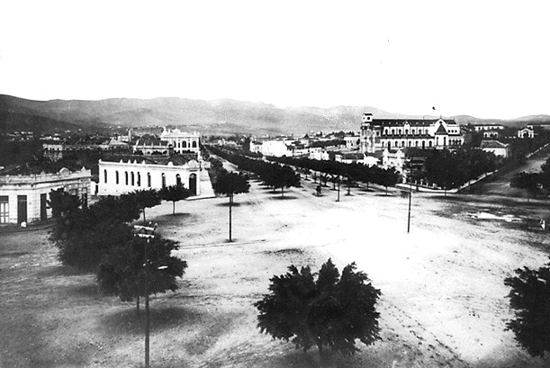 Em 1893, a cidade foi escolhida para ser a capital do Estado de Minas Gerais no século XIX, depois da constatação de que Ouro Preto, antiga capital, não possuía estrutura
para expansão urbana. Por essas razões, Belo Horizonte foi totalmente planejada.Em 1894, foi iniciada a construção de Belo Horizonte, com ênfase moderna nos seus aspectos construtivos. O planejamento urbano ficou a cargo do chefe da Comissão de
Construção da Nova Capital Aarão Reis.
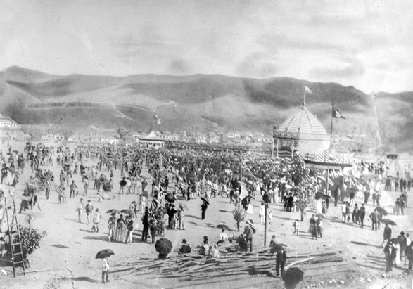O tempo passou, as esferas administrativas se consolidaram e a cidade passou a enfrentar problemas, comuns de qualquer cidade, marcados pela ausência de estruturas, de lazer,
ou na saúde, educação e transporte público. Esses efeitos ocorreram principalmente nas décadas de 30 e 40 do século XX.
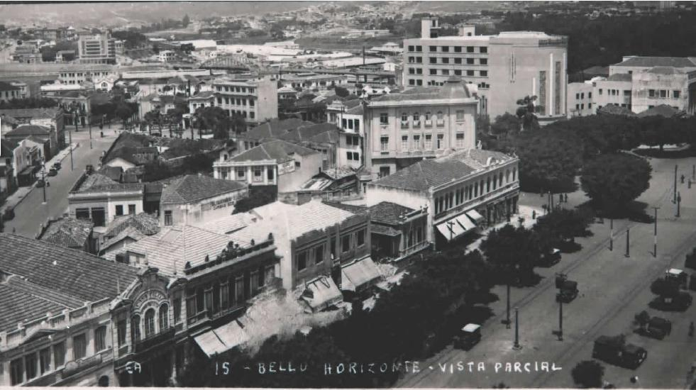A década de 40 do século XX foi marcada pelo avanço da industrialização. Nessa época foi inaugurado o Complexo Arquitetônico da Pampulha (composto pela Igreja de São Francisco
de Assis, o Iate Tênis Clube, a Casa do Baile e o Cassino, hoje Museu de Arte da Pampulha, circundando a Lagoa da Pampulha), encomendado pelo prefeito em exercício Juscelino Kubitschek, com projeto assinado por Oscar Niemeyer.
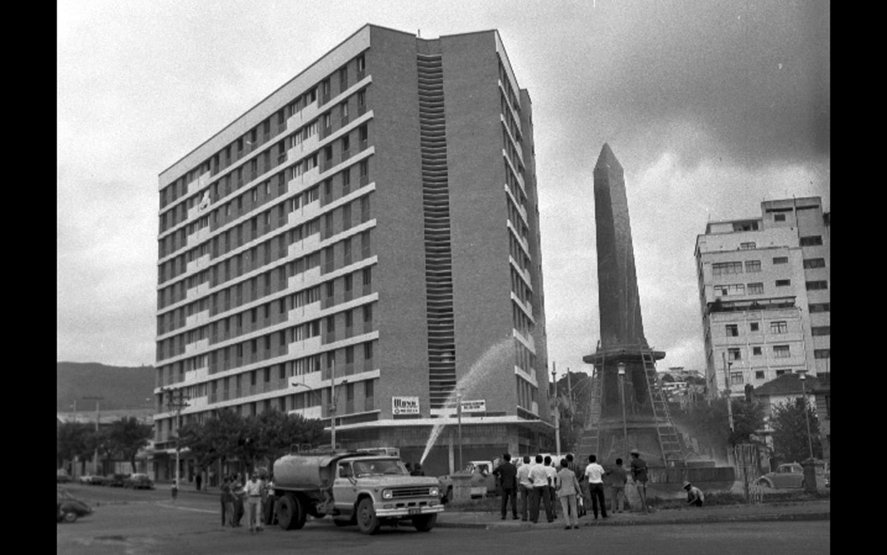Nos anos 60, a capital passou por um processo acelerado de crescimento urbano que avançou sobre suas ruas, quando foram demolidas casas e áreas verdes. Os anos 70 foram marcados
pela verticalização da cidade, que comprometeu boa parte das suas características originais e do seu patrimônio arquitetônico. Nessa época, contava com algo em torno de um milhão de habitantes.
foto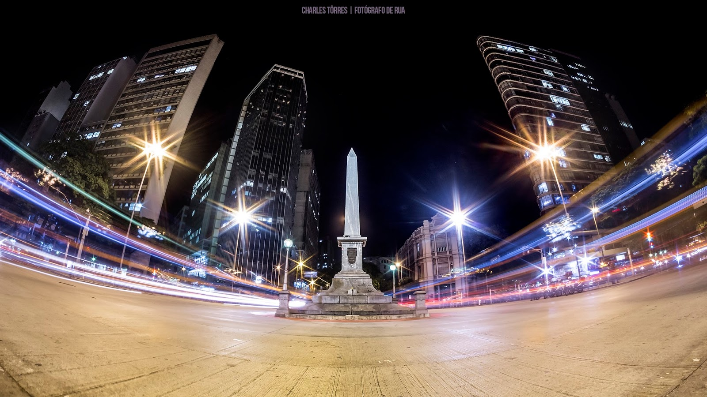
foto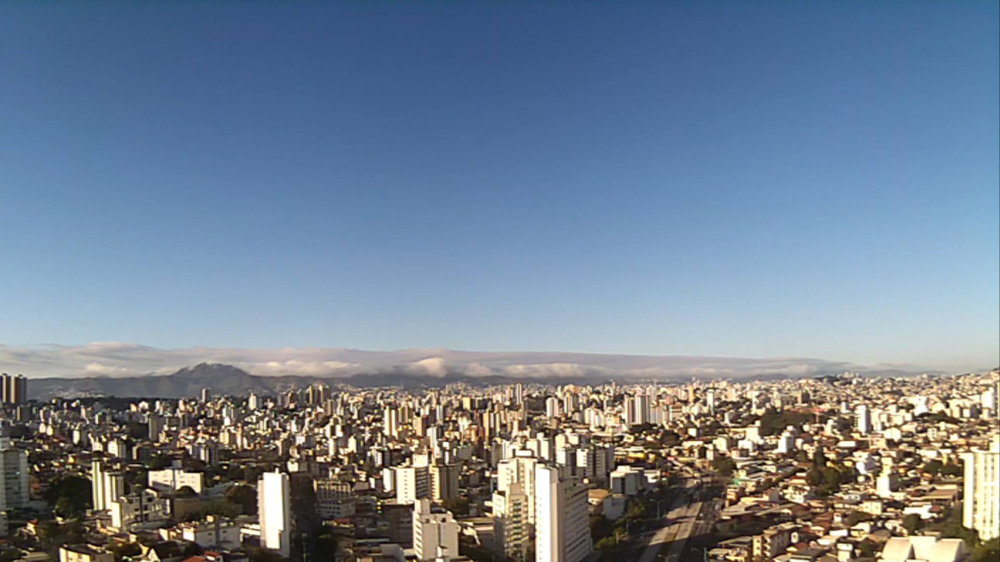
foto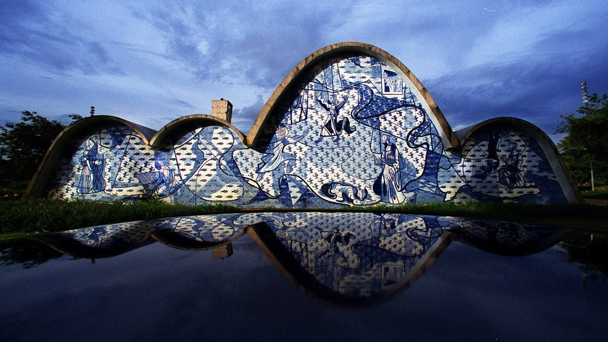
foto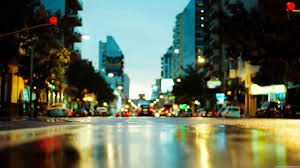
foto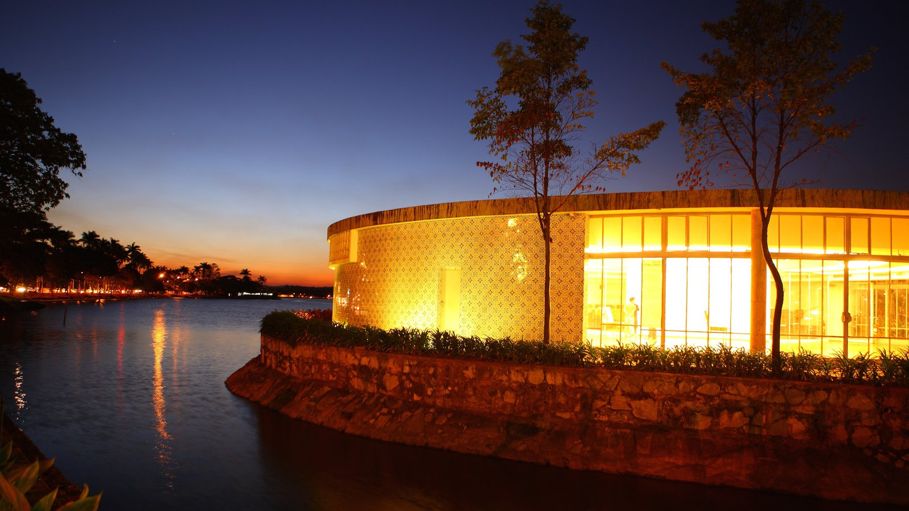
foto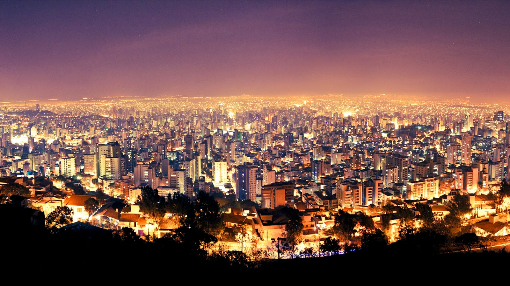
foto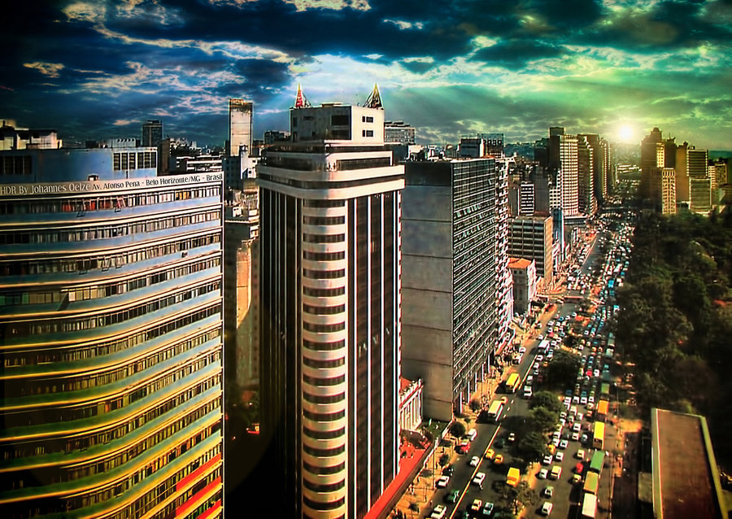
foto
foto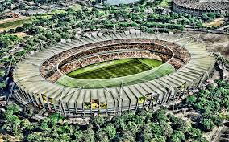
foto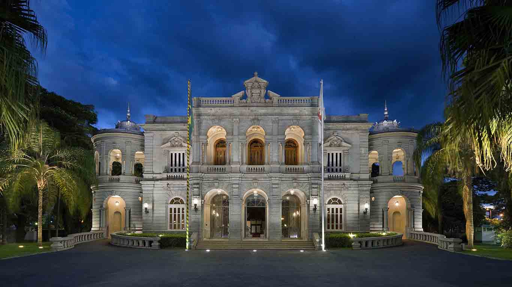
foto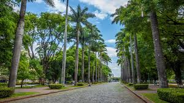
foto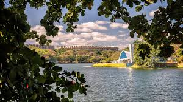
CURIOSIDADES DE BH
Projetada pelo engenheiro Aarão Reis entre 1894 e 1897, Belo Horizonte foi a primeira cidade brasileira moderna planejada. Elementos chaves do seu traçado incluem uma malha perpendicular de ruas, cortadas por avenidas em diagonal, quarteirões
de dimensões regulares, visadas privilegiadas, e uma avenida em torno de seu perímetro (Avenida do Contorno). Outro aspecto interessante do projeto original é a abundância de parques e praças, com um grande parque municipal na área central.
Belo Horizonte possui 148 bairros. Alguns deles são nacionalmente conhecidos como, por exemplo, a Savassi e a Pampulha.
A cidade já foi sede de importantes eventos internacionais como a Ecolatina (2006), o Encontro das Américas e o Encontro Econômico Brasil-Alemanha, a final do Campeonato Mudial de Natação em Piscina Curta (2007), Copa do Mundo FIFA (2014).
O estádio Mineirão teve sua capacidade reduzida de 130.000 para 76.000 pessoas. Quando foi inaugurado, em setembro de 1965, era o segundo maior estádio coberto do mundo. Atualmente é o terceiro maior estádio brasileiro ficando atrás do Maracanã
no Rio de Janeiro e o Mané Garrincha em Brasília.
Todas as ruas de Belo Horizonte mudam de nome após cruzarem a Avenida do Contorno, exceto a rua Itajubá, no bairro da Floresta.